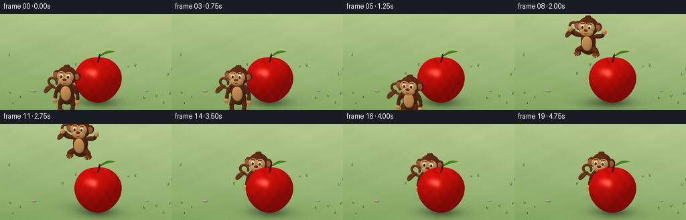
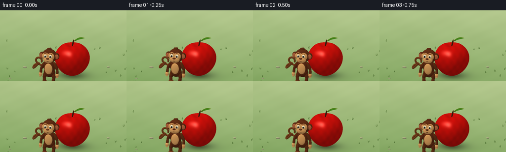
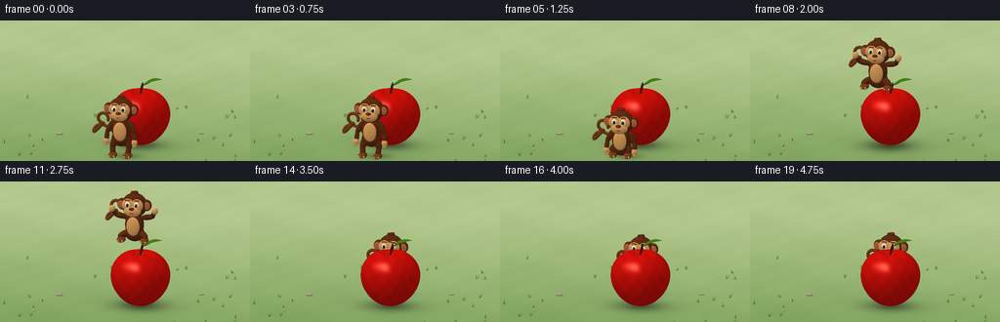

CODING AGENTS AS PIXEL WORLD MODELS
traex/GPT-6.1-Sol · dynamic_spatial_relationship_0062
点击播放 · 原生 RGB 像素
逐轮保存的候选
回放视频、检查图与代码变化。
每份候选均可单独播放。实际图片检查记录在下方工具轨迹中。
候选 01播放与检查图
点击播放 · 原生 RGB 像素

展开代码变化
--- 上一保存版本
+++ 本次保存版本
@@ -0,0 +1,272 @@
+"""Procedural, supersampled RGB animation; no external assets or renderer."""
+from pathlib import Path
+import math
+import numpy as np
+from PIL import Image
+import artifact_io
+
+ROOT = Path(__file__).resolve().parent
+W, H, SS = 256, 144, 3
+WW, HH = W * SS, H * SS
+V = np.array([.23, -.91, .345]); V /= np.linalg.norm(V)
+R = np.cross(np.array([0., 0., 1.]), V); R /= np.linalg.norm(R)
+U = np.cross(V, R)
+TARGET = np.array([.12, .15, 1.44])
+SPAN = 5.65
+px = (np.arange(WW) + .5 - WW/2) * SPAN/WW
+py = (HH/2 - np.arange(HH) - .5) * SPAN/WW
+ORIG = TARGET + px[None,:,None]*R + py[:,None,None]*U + 12*V
+D = -V
+LIGHT = np.array([-3.8,-5.,8.]); LIGHT /= np.linalg.norm(LIGHT)
+
+def project(p):
+ p = np.asarray(p)-TARGET
+ return np.array([WW/2 + p@R*WW/SPAN, HH/2 - p@U*WW/SPAN])
+
+class Scene:
+ def __init__(self, monkey_ground, airborne):
+ self.depth = np.full((HH, WW), 1e6, dtype=np.float32)
+ t = -ORIG[:,:,2]/D[2]
+ p = ORIG + t[:,:,None]*D
+ self.depth[:] = t
+ # Warm, diffuse meadow floor with a soft photographic background gradient.
+ distant = np.clip((p[:,:,1]+1.5)/10,0,1)
+ grass = (np.sin(p[:,:,0]*2.1+p[:,:,1]*.7)*np.sin(p[:,:,1]*1.5) + .35*np.sin(p[:,:,0]*7-p[:,:,1]*3))
+ base = np.array([.51,.65,.38])[None,None,:] + distant[:,:,None]*np.array([.19,.13,.17])
+ base += grass[:,:,None]*.009
+ # Broad penumbrae and crisp contact cores establish front/back depth.
+ shadows = np.zeros((HH,WW))
+ for cx,cy,sx,sy,amount in [(.52,.32,.72,.58,.36),(.48,.3,.38,.34,.14),
+ (monkey_ground[0]+.13,monkey_ground[1]+.10,.40+airborne*.17,.31+airborne*.12,.27/(1+airborne*.9))]:
+ shadows += amount*np.exp(-((p[:,:,0]-cx)/sx)**2-((p[:,:,1]-cy)/sy)**2)
+ base *= (1-np.clip(shadows,0,.62))[:,:,None]
+ self.rgb = np.clip(base,0,1)
+
+ def shade(self, pos, normal, color, shiny=0, fur=0):
+ lam = np.maximum(0,normal@LIGHT)
+ ambient = .69 + .11*normal[:,:,2]
+ amount = ambient + .29*lam
+ half = LIGHT+V; half /= np.linalg.norm(half)
+ spec = np.maximum(0,normal@half)**(48 if shiny else 25)
+ # Extremely fine, non-directional procedural texture.
+ grain = np.sin(pos[:,:,0]*161 + np.sin(pos[:,:,2]*81))*np.sin(pos[:,:,1]*143+pos[:,:,2]*90)
+ out = np.array(color)[None,None,:]*amount[:,:,None]
+ out += shiny*spec[:,:,None]*np.array([1.,.96,.85])
+ if fur: out *= (1+grain[:,:,None]*.023)
+ return np.clip(out,0,1)
+
+ def ell(self, center, radii, color, shiny=0, fur=0, basis=None):
+ c = np.asarray(center,dtype=float); rad = np.asarray(radii)
+ B = np.eye(3) if basis is None else np.asarray(basis)
+ corners = np.array([c+B@np.array([a*rad[0],b*rad[1],d*rad[2]]) for a in (-1,1) for b in (-1,1) for d in (-1,1)])
+ uv = np.array([project(q) for q in corners])
+ x0,y0 = np.maximum(np.floor(uv.min(0)-2).astype(int),0)
+ x1,y1 = np.minimum(np.ceil(uv.max(0)+2).astype(int),[WW,HH])
+ if x1<=x0 or y1<=y0: return
+ o = ORIG[y0:y1,x0:x1]
+ q = (o-c)@B/rad
+ dd = D@B/rad
+ aa = dd@dd; bb = q@dd; cc = np.sum(q*q,axis=2)-1
+ det = bb*bb-aa*cc
+ t = (-bb-np.sqrt(np.maximum(0,det)))/aa
+ old = self.depth[y0:y1,x0:x1]
+ mask = (det>=0)&(t<old)&(t>0)
+ if not mask.any(): return
+ p = o+t[:,:,None]*D
+ n = (((p-c)@B)/(rad*rad))@B.T
+ n /= np.maximum(np.linalg.norm(n,axis=2,keepdims=True),1e-8)
+ rgb = self.shade(p,n,color,shiny,fur)
+ old[mask] = t[mask]
+ self.rgb[y0:y1,x0:x1][mask] = rgb[mask]
+
+ def bone(self,a,b,r,color,fur=0):
+ a,b = np.array(a),np.array(b)
+ vec = b-a; length=np.linalg.norm(vec)
+ if length<1e-6: return self.ell(a,[r]*3,color,fur=fur)
+ axis = vec/length
+ helper = np.array([0.,1.,0.]) if abs(axis[1])<.9 else np.array([1.,0.,0.])
+ side = np.cross(helper,axis); side/=np.linalg.norm(side)
+ B = np.column_stack([side,np.cross(axis,side),axis])
+ self.ell((a+b)/2,[r,r,length/2+r],color,fur=fur,basis=B)
+
+ def curve(self, points, radius, color, fur=0):
+ for a,b in zip(points[:-1],points[1:]): self.bone(a,b,radius,color,fur)
+
+ def mesh(self,verts,normals,faces,color,shiny=0):
+ uv = np.array([project(p) for p in verts])
+ depths = 12-(verts-TARGET)@V
+ for ids in faces:
+ tri = uv[ids]
+ x0,y0 = np.maximum(np.floor(tri.min(0)).astype(int),0)
+ x1,y1 = np.minimum(np.ceil(tri.max(0)).astype(int)+1,[WW,HH])
+ if x1<=x0 or y1<=y0: continue
+ xx,yy=np.meshgrid(np.arange(x0,x1)+.5,np.arange(y0,y1)+.5)
+ a,b,c=tri
+ den=(b[1]-c[1])*(a[0]-c[0])+(c[0]-b[0])*(a[1]-c[1])
+ if abs(den)<1e-10: continue
+ wa=((b[1]-c[1])*(xx-c[0])+(c[0]-b[0])*(yy-c[1]))/den
+ wb=((c[1]-a[1])*(xx-c[0])+(a[0]-c[0])*(yy-c[1]))/den
+ wc=1-wa-wb
+ t=wa*depths[ids[0]]+wb*depths[ids[1]]+wc*depths[ids[2]]
+ old=self.depth[y0:y1,x0:x1]
+ mask=(wa>=-1e-5)&(wb>=-1e-5)&(wc>=-1e-5)&(t<old)
+ if not mask.any():continue
+ weights=np.stack([wa,wb,wc],axis=-1)
+ p=weights@verts[ids]
+ n=weights@normals[ids]; n/=np.maximum(np.linalg.norm(n,axis=2,keepdims=True),1e-8)
+ rgb=self.shade(p,n,color,shiny)
+ # Apple skin: rosy variation, very fine golden lenticel flecks.
+ if shiny>.2:
+ variation=.025*np.sin(p[:,:,0]*18+p[:,:,1]*9)*np.sin(p[:,:,2]*12)
+ rgb[:,:,0]+=variation
+ flecks=(np.sin(p[:,:,0]*280+p[:,:,1]*177)*np.sin(p[:,:,2]*219+p[:,:,1]*57)>.984)
+ rgb[flecks] += np.array([.04,.035,.019])
+ old[mask]=t[mask]
+ self.rgb[y0:y1,x0:x1][mask]=rgb[mask]
+
+def apple_mesh():
+ N,M=48,72
+ def point(th,ph):
+ r=.77*np.sin(th)*(1+.13*np.cos(th))*(1+.024*np.cos(5*ph)*np.sin(th))
+ z=.77+.76*np.cos(th)-.135*np.exp(-(th/.30)**2)+.035*np.exp(-((th-math.pi)/.25)**2)
+ return np.array([.49+r*np.cos(ph),.32+r*np.sin(ph),z])
+ verts=[]; norms=[]; faces=[]
+ for i in range(N+1):
+ th=.0001+(math.pi-.0002)*i/N
+ for j in range(M):
+ ph=2*math.pi*j/M
+ p=point(th,ph)
+ dt=(point(th+.0001,ph)-point(th-.0001,ph))
+ dp=(point(th,ph+.0001)-point(th,ph-.0001))
+ n=np.cross(dt,dp); n/=np.linalg.norm(n)
+ verts.append(p); norms.append(n)
+ for i in range(N):
+ for j in range(M):
+ a=i*M+j;b=i*M+(j+1)%M;c=(i+1)*M+j;d=(i+1)*M+(j+1)%M
+ faces.extend([[a,c,b],[b,c,d]])
+ return np.array(verts),np.array(norms),np.array(faces)
+
+APPLE=apple_mesh()
+BROWN=(.36,.17,.075); LIGHTBROWN=(.45,.24,.105); TAN=(.85,.62,.36); EAR=(.70,.39,.24)
+
+def monkey(scene,x,y,lift,crouch,phase,settle):
+ # Articulated toy-like monkey. Face remains toward the camera throughout.
+ root=np.array([x,y,lift])
+ def P(a,b,c): return root+np.array([a,b,c])
+ def ell(p,r,c,**kw):scene.ell(root+np.array(p),r,c,**kw)
+ def bone(a,b,r,c=BROWN):scene.bone(root+np.array(a),root+np.array(b),r,c,fur=1)
+ bodyz=.75-crouch*.25
+ headz=1.30-crouch*.35
+ airborne=math.sin(math.pi*phase) if 0<phase<1 else 0
+ # The long curled tail is an unmistakable monkey silhouette.
+ tail=[]
+ for t in np.linspace(0,1,24):
+ tail.append(P(-.10-.70*math.sin(t*math.pi*.80),.12+.10*math.sin(t*math.pi),.52-crouch*.2+.34*t+.18*math.sin(t*math.pi*2)+airborne*.22))
+ for t in np.linspace(0,math.pi*1.6,18)[1:]:
+ tail.append(tail[23]+np.array([-.14*math.sin(t),-.008*t,.14*(1-math.cos(t))]))
+ scene.curve(tail,.043,LIGHTBROWN,fur=1)
+ ell((0,.015,bodyz-.24),(.26,.20,.22),BROWN,fur=1)
+ # Bent legs tuck up during flight; both broad feet have visible toes.
+ for s in [-1,1]:
+ hip=(s*.15,.01,bodyz-.22)
+ knee=(s*(.22+.12*airborne),-.06-.12*airborne,.30+airborne*.15-crouch*.07)
+ foot=(s*(.20+.13*airborne),-.13-.08*airborne,.085+airborne*.27)
+ bone(hip,knee,.095);bone(knee,foot,.073)
+ ell(foot,(.115,.18,.075),LIGHTBROWN,fur=1)
+ for off in [-.055,0,.055]:
+ ell((foot[0]+off,foot[1]-.125,foot[2]-.008),(.026,.06,.033),TAN)
+ ell((0,0,bodyz),(.25,.205,.355),BROWN,fur=1)
+ ell((0,-.18,bodyz-.015),(.178,.065,.255),TAN)
+ # Arms swing upward on takeoff, then settle to the sides.
+ swing=airborne
+ for s in [-1,1]:
+ sh=(s*.23,-.005,bodyz+.20)
+ elbow=(s*(.37+.13*swing),-.035,bodyz-.07+.36*swing)
+ hand=(s*(.38+.23*swing),-.115,bodyz-.31+.85*swing)
+ bone(sh,elbow,.075);bone(elbow,hand,.062)
+ ell(hand,(.081,.065,.095),TAN)
+ for j in range(3):
+ start=(hand[0]+(j-1)*.029,hand[1]-.027,hand[2]-.026)
+ end=(start[0]+s*.006,start[1]-.017,start[2]-.07+.10*swing)
+ bone(start,end,.018,TAN)
+ ell((0,-.005,headz),(.335,.263,.325),BROWN,fur=1)
+ for s in [-1,1]:
+ ell((s*.327,-.014,headz+.015),(.137,.094,.155),BROWN,fur=1)
+ ell((s*.352,-.092,headz+.014),(.092,.026,.109),EAR)
+ ell((s*.123,-.231,headz+.052),(.163,.067,.170),TAN)
+ ell((0,-.24,headz-.106),(.228,.105,.151),TAN)
+ for s in [-1,1]:
+ ell((s*.12,-.294,headz+.077),(.067,.040,.074),(.97,.94,.80),shiny=.12)
+ ell((s*.117,-.332,headz+.073),(.034,.020,.047),(.16,.08,.035),shiny=.16)
+ ell((s*.114,-.349,headz+.077),(.019,.011,.030),(.034,.023,.019),shiny=.13)
+ ell((s*.122-.009,-.358,headz+.093),(.009,.005,.011),(1.,1.,.92))
+ brow=[P(s*.12+u,-.283,headz+.174+.025*math.cos(u/.07)) for u in np.linspace(-.061,.061,8)]
+ scene.curve(brow,.014,BROWN)
+ ell((0,-.340,headz-.020),(.073,.045,.044),(.42,.21,.115),shiny=.07)
+ for s in [-1,1]:ell((s*.027,-.377,headz-.028),(.013,.007,.008),(.19,.084,.045))
+ smile=[P(t,-.342+.07*(t/.126)**2,headz-.148+.052*(t/.126)**2) for t in np.linspace(-.126,.126,18)]
+ scene.curve(smile,.0085,(.28,.11,.058))
+ # Three softly rounded tufts on the crown.
+ for j in range(3):ell((-.06+j*.052,.004,headz+.297+j*.008),(.053,.070,.078),BROWN,fur=1)
+
+def leaf(scene):
+ scene.bone([.49,.32,1.395],[.55,.34,1.68],.032,(.25,.13,.055))
+ scene.bone([.55,.34,1.62],[.75,.38,1.72],.015,(.32,.27,.08))
+ verts=[]; norms=[]
+ start=np.array([.56,.35,1.64]); end=np.array([1.04,.40,1.80])
+ for i in range(17):
+ t=i/16; c=start*(1-t)+end*t; c[2]+=.085*math.sin(math.pi*t)
+ width=.128*math.sin(math.pi*t)**.85
+ for k in [-1,0,1]:
+ verts.append(c+np.array([-.018*k,k*width,-abs(k)*.042*math.sin(math.pi*t)]))
+ norms.append(np.array([-.1,-.6,.8]))
+ faces=[]
+ for i in range(16):
+ for j in range(2):
+ a=i*3+j;faces.extend([[a,a+3,a+1],[a+1,a+3,a+4]])
+ scene.mesh(np.array(verts),np.array(norms),np.array(faces),(.22,.46,.075),.10)
+ scene.curve([start*(1-t)+end*t+np.array([0,0,.085*math.sin(math.pi*t)+.005]) for t in np.linspace(0,1,16)],.007,(.48,.61,.16))
+
+def decorations(scene):
+ # Sparse tiny meadow details leave the action unobstructed.
+ rng=np.random.default_rng(6)
+ for i in range(38):
+ x=rng.uniform(-3.5,3.5); y=rng.uniform(-2.5,4)
+ if -1.3<x<1.6 and -1.7<y<2.2:continue
+ for j in range(3):
+ h=rng.uniform(.04,.11)
+ scene.bone([x+j*.018,y,0],[x+j*.018+rng.uniform(-.035,.035),y+.015,h],.006,(.33,.48,.20))
+ for x,y,r in [(-1.8,.75,.10),(1.8,1.7,.075),(-2.1,-.8,.055),(2.1,-1.2,.08)]:
+ scene.ell([x,y,r*.32],[r,r*.65,r*.4],(.63,.65,.48))
+
+def main():
+ frames=[]
+ for f in range(20):
+ phase=0.;lift=0.;crouch=0.;settle=0.
+ x,y=-.25,-.90
+ if f<=3:
+ settle=.015*math.sin(f*1.4)
+ elif f<=5:
+ crouch=(f-3)/2
+ elif f<=14:
+ phase=(f-5)/9
+ # Ballistic-looking arc travels straight over the apple into depth.
+ y=-.90+2.30*phase; x=-.25+.10*phase
+ lift=1.78*math.sin(math.pi*phase)
+ crouch=.25*math.sin(math.pi*phase)
+ else:
+ phase=1.;x,y=-.15,1.40
+ crouch=.45 if f==15 else (.15 if f==16 else 0.)
+ settle=.008*math.sin(f)
+ sc=Scene((x,y),lift)
+ decorations(sc)
+ sc.mesh(*APPLE,(.77,.058,.036),.34)
+ leaf(sc)
+ monkey(sc,x,y,lift+settle,crouch,phase,settle)
+ image=Image.fromarray((np.clip(sc.rgb,0,1)*255+.5).astype(np.uint8))
+ image=image.resize((W,H),Image.Resampling.LANCZOS)
+ frames.append(np.array(image))
+ print(f'frame {f+1}/20',flush=True)
+ artifact_io.save(np.stack(frames),ROOT)
+
+if __name__=='__main__':main()
候选 02播放与检查图
点击播放 · 原生 RGB 像素

展开代码变化
--- 上一保存版本
+++ 本次保存版本
@@ -8,11 +8,11 @@
ROOT = Path(__file__).resolve().parent
W, H, SS = 256, 144, 3
WW, HH = W * SS, H * SS
-V = np.array([.23, -.91, .345]); V /= np.linalg.norm(V)
+V = np.array([.23, -.94, .28]); V /= np.linalg.norm(V)
R = np.cross(np.array([0., 0., 1.]), V); R /= np.linalg.norm(R)
U = np.cross(V, R)
-TARGET = np.array([.12, .15, 1.44])
-SPAN = 5.65
+TARGET = np.array([.12, .15, 1.50])
+SPAN = 6.55
px = (np.arange(WW) + .5 - WW/2) * SPAN/WW
py = (HH/2 - np.arange(HH) - .5) * SPAN/WW
ORIG = TARGET + px[None,:,None]*R + py[:,None,None]*U + 12*V
@@ -243,7 +243,7 @@
frames=[]
for f in range(20):
phase=0.;lift=0.;crouch=0.;settle=0.
- x,y=-.25,-.90
+ x,y=.28,-.90
if f<=3:
settle=.015*math.sin(f*1.4)
elif f<=5:
@@ -251,11 +251,11 @@
elif f<=14:
phase=(f-5)/9
# Ballistic-looking arc travels straight over the apple into depth.
- y=-.90+2.30*phase; x=-.25+.10*phase
- lift=1.78*math.sin(math.pi*phase)
+ y=-.90+2.30*phase; x=.28-.03*phase
+ lift=1.65*math.sin(math.pi*phase)
crouch=.25*math.sin(math.pi*phase)
else:
- phase=1.;x,y=-.15,1.40
+ phase=1.;x,y=.25,1.40
crouch=.45 if f==15 else (.15 if f==16 else 0.)
settle=.008*math.sin(f)
sc=Scene((x,y),lift)
候选 03播放与检查图

可观测工具轨迹
实际执行的命令与返回图片。
命令 1exit 0
/bin/bash -lc 'pwd && ls -la && cat prompt.txt && cat GENERATION_RULES.md && cat task_spec.json'
命令 2exit 0
/bin/bash -lc "cat artifact_io.py && python - <<'PY'
import numpy, PIL
print('numpy and PIL available')
PY"命令 3exit 0
/bin/bash -lc 'python generate.py'
命令 4exit 0
/bin/bash -lc 'python generate.py'
命令 5exit 0
/bin/bash -lc "if command -v ffmpeg >/dev/null 2>&1; then ffmpeg -loglevel error -y -framerate 4 -i frames/%02d.png -frames:v 20 -c:v libx264 -crf 18 -pix_fmt yuv420p video.mp4; fi
python - <<'PY'
from pathlib import Path
import numpy as np
from PIL import Image
p=Path('.')
a=np.load(p/'pixels.npz')['pixels']
assert a.shape==(144,256,20)
assert len(list((p/'frames').glob('*.png')))==20
assert Image.open(p/'frames/00.png').mode=='RGB'
for name in ['generate.py','pixels.npz','index.html','inspection.png','video.mp4']:
q=p/name
if q.exists(): print(name,q.stat().st_size,'bytes')
PY"视觉工具实际返回图片 1

视觉工具实际返回图片 2

保存候选 3 份；完成命令 5 次；可验证图片返回 2 张。原始 API 响应与完整日志保留在本地。